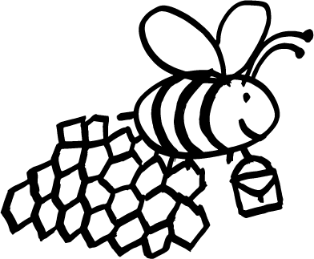
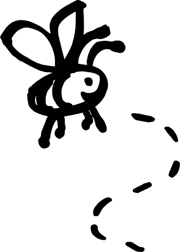
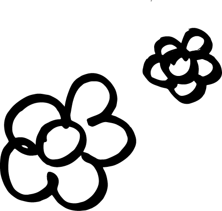

Bonjour à toi ! Ici tu vas découvir les étapes de pollinisation. Les abeilles sont très importantes pour la biodiversité d'une part, mais surtout pour leurs principe de pollinisation.
Le départ de la ruche

Les petites abeilles laissent leurs familles. Ils s'en vont travailler. Leur travail est très important car il s'agit de trouver une fleur et de la buttiner. La petite abeille doit bien se préparer avant de partir et prend un petit dejeuner complet.
.
Trouver une fleur

Chercher une fleur est très important. Il faut qu'elle soit belle et grande mais elle peut aussi être petite, jaune, verte, bleue, orange, rouge... Toutes les fleurs sont importantes, comme les abeilles.
Le buttinage

Une fois attiré par une fleur, l’insecte s’y pose et s’y nourrit. Du pollen se dépose alors sur celui-ci qu’il emportera sur la prochaine fleur qu’il visitera. Si ces deux fleurs sont de la même espèce, il y aura alors pollinisation et en conséquence plus tard formation d’un fruit et d’une graine.